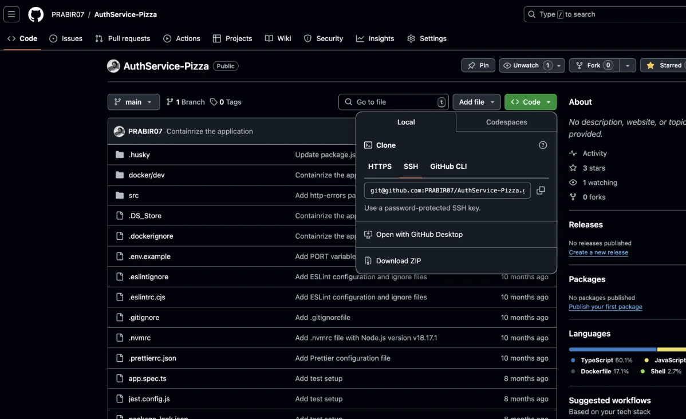
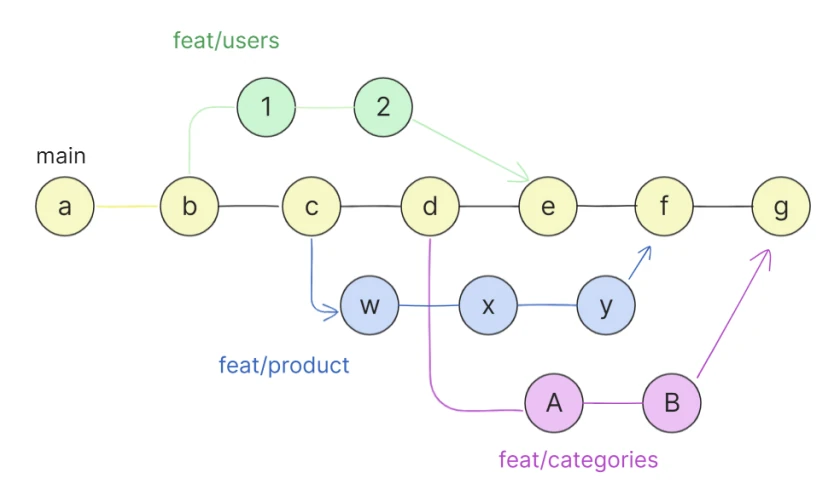
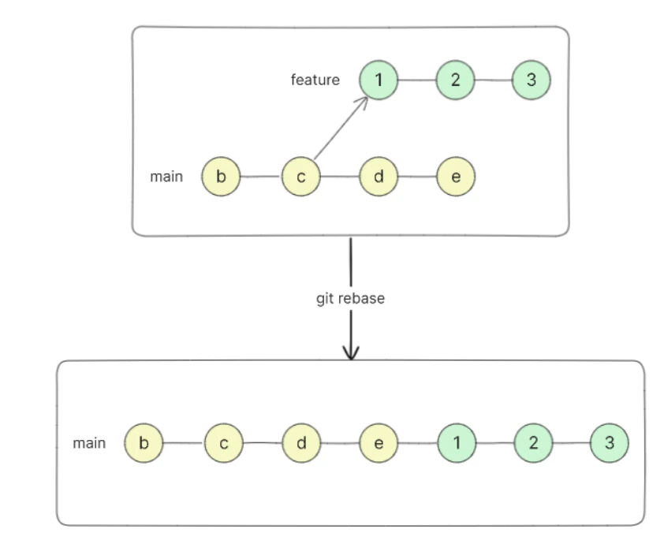
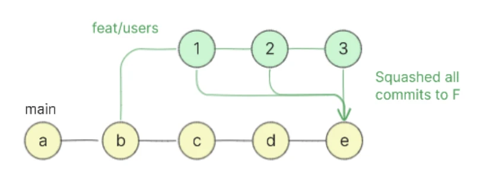
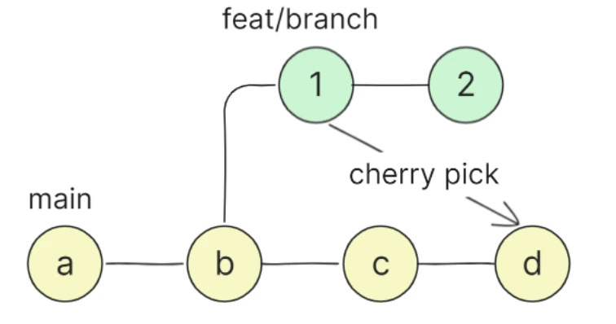

Git Fundamentals
Why Git, and what else is out there
Git does everything you expect from a version control system, and does it fast. It gives teams a solid way to manage source code together, track every change and coordinate work across people and locations, with excellent branching, merging and history tools. That combination is why Git became the default choice for almost every software team.
Distributed
Every clone has the full history: work offline, and every laptop is a backup.
Cheap branches
Creating and switching branches takes a moment, so you use them for every feature.
Everywhere
GitHub, GitLab, Bitbucket, CI tools and editors all speak Git.
Alternatives to Git
| Tool | Type | Known for |
|---|---|---|
| Mercurial | Distributed, free, open source | Similar to Git in many ways; simple and fast, liked by people who want a lightweight tool. |
| Subversion (SVN) | Centralised | Reliable and simple; still common in large organisations. |
| CVS (Concurrent Versions System) | Centralised, older | Simple and easy to use, but lacks advanced features found in Git and Mercurial. Still used by a few teams. |
The map: where each command acts
add → commit → push, and come back with fetch/pull and checkout.This note covers these commands, grouped by job:
Start & save
init · status · add · commit
Look at history
log · diff · blame · reflog
Share
clone · remote · pull · push
Branch & combine
branch · checkout · merge · rebase · squash · cherry-pick
Park & undo
stash · reset · revert · clean
Mark & tidy
tag · prune · help
git init and git status
git init · start a repository
git init turns an existing folder into a Git repository. It creates a hidden sub-folder called .git that holds everything Git needs: the history, branches and settings. Open a terminal in the project’s root folder and run:
Try it
mkdir git_practice && cd git_practice
git initInitialized empty Git repository in /path/to/git_practice/.git/Run any Git command in a folder that is not a repository and you get this error:
$ git status
fatal: not a git repository (or any of the parent directories): .git.git That folder is the repository. Delete it and your files stay, but the whole history is gone.git status · what is going on?
git status shows which files are modified, which are staged for the next commit, and which are untracked (new files Git is not watching yet). Run it before and after every step; it is the command you will type most.
A brand-new repository with three new files:
On branch master
No commits yet
Untracked files:
(use "git add <file>..." to include in what will be committed)
dropdown&navbar.zip
dropdown.html
navbar.html
nothing added to commit but untracked files present (use "git add" to track)A repository with nothing new to save:
On branch main
Your branch is up to date with 'origin/main'.
nothing to commit, working tree cleangit add and git commit
git add · choose what goes in
git add starts tracking a new file, or stages changes so they are included in the next commit. Staging lets you choose which changes go into a commit and which stay out for now.
git add . # stage all changes and new files in this folder
git add newFile.js # stage a single file
git add newFile1.js newFile2.js # stage several filesgit commit · save a snapshot
A commit is a snapshot of the project at one point in time. Each commit gets a unique ID (a hash such as 3f9a1c2) and a message describing what changed. git commit saves everything that is staged as a new commit.
git commit -m "message that describes the change"
git commit -m "initial commit"Commit message convention
Good messages keep the history clean and readable. A widely used convention (Conventional Commits) has three parts:
Type: the category of change, e.g. feat, fix, docs, style, refactor, test, chore.
A colon and a space separate the type from the subject.
Subject: one short, imperative, present-tense sentence (“Add”, not “Added”), with no full stop at the end.
An optional body can follow after a blank line, explaining the context and reasoning, wrapped at about 72 characters per line.
| Type | Use it for | Example |
|---|---|---|
feat | A new feature | feat: Add user login functionality |
fix | A bug fix | fix: Fix issue in the login page |
docs | Documentation only | docs: Update swagger README with installation instructions |
style | Formatting, no logic change | style: Format code according to project style guide |
refactor | Restructuring code without changing behaviour | refactor: Refactor database connection URL |
test | Adding or changing tests | test: Add unit test for user login logic |
chore | Routine tasks and maintenance | chore: Update dependencies |
Reading history: git log and git diff
Each commit stores a pointer to the commit before it (its parent), so the history is a chain. A branch such as main is just a label on the newest commit, and HEAD marks where you are now.
main marks the tip and HEAD marks where you are.git log · the commit history
Shows past commits with their hashes, authors, dates and messages, newest first.
git log # full history
git log --oneline # compact: one line per commit
git show <commit_hash> # details and changes of a single commit
git log -p # history with the changes (patch) of each commit
git log -n 5 # only the last 5 commits
git log <branch_name> # commits on a specific branch
git log --author="Asha" # commits by one author$ git log --oneline
d4e8a10 (HEAD -> main) docs: README
c9d07b2 fix: login typo
b7c2e45 feat: add login
a1f3c99 initial commitgit diff · what exactly changed?
Compares two versions and shows the lines added (+) and removed (-).
git diff # working directory vs staging area (unstaged changes)
git diff --staged # staged changes vs the last commit
git diff <commit1> <commit2> # compare two commits
git diff <branch_name> # your working files vs another branch
git diff <file_name> # changes in one file only
git diff --stat # summary: which files changed, how many lines$ git diff
diff --git a/index.html b/index.html
@@ -1,3 +1,3 @@
<h1>Shop</h1>
-<p>Welcom</p>
+<p>Welcome</p>git diff only shows changes you have not staged yet. After git add, use git diff --staged.Working with remotes: clone, remote, pull, push
git clone · copy a repository to your machine
Downloads a remote repository: all the files, the full commit history and the branches. It also sets up a remote called origin pointing back to where you cloned from.
git clone https://github.com/username/repo-name.git
# creates a folder "repo-name" with the project's files and historyTo get the URL on GitHub, open the repository and click the green Code button; the link is shown there.

git clone.git remote · manage connections
A repository can talk to several remotes. git remote lists and manages them.
git remote # list remotes
git remote -v # list remotes with their URLs
git remote add <name> <url> # add a remote, e.g. git remote add origin <url>
git remote remove <name> # remove a remote
git remote rename <old_name> <new_name> # rename a remote
git remote show <name> # details about one remotegit pull · get others’ work
git pull = two steps in one:
- 1
git fetchDownloads new commits from the remote (usuallyorigin) into your local repository, without touching your current branch. - 2
git mergeMerges those fetched commits into your current branch.
git pull # fetch + merge from the branch your branch tracks
git pull origin feature-branch # fetch + merge a specific remote branchgit push · send your commits
Uploads your local commits to the remote so others can see them.
git push -u origin main # first push: also set origin/main as upstream
git push # later pushes from the same branchgit pull to combine their work with yours, then push again.Branches: git branch and git checkout
main keeps moving while you work on feature.git branch · list, create, rename, delete
git branch # list local branches (* marks the current one)
git branch -r # list remote-tracking branches
git branch -a # list all branches, local and remote
git branch <new_branch_name> # create a branch, e.g. git branch feature/new-feature
git branch -m new-name # rename the current branch
git branch -d <branch_name> # delete a branch (only if it is already merged)
git branch -D <branch_name> # force-delete, even if not mergedgit checkout · switch, restore, time-travel
git checkout is a multi-purpose command:
git checkout <branch_name> # switch to a branch
git checkout -b <new_branch> # create a branch and switch to it
git checkout -- <file> # discard uncommitted edits to a file
git checkout <commit_hash> -- <file> # restore a file from an old commit
git checkout <commit_hash> # view an old commit (detached HEAD)
git checkout --orphan <new_branch> # new branch with no historyCheckout can also undo a commit by restoring the files of the commit before it and committing the result as a new commit:
git checkout <commit_hash>^ -- . # restore every file as it was before that commit
git commit -m "Revert to previous commit"git checkout -b feature/new-feature # everyday shortcutgit switch <branch> (and git switch -c <new>) switches branches, and git restore <file> discards changes to a file. They split checkout’s two jobs; both styles work.git checkout <commit_hash> you are not on any branch. Look around freely, but commits made here are easy to lose. To keep work, create a branch first: git switch -c rescue.Combining work: merge, rebase, squash, cherry-pick
git merge
Integrates the changes from one branch into another, typically a finished feature branch back into main. Switch to the branch that should receive the changes, then merge:
git checkout main
git merge feature
main when it is done.git rebase
Also integrates changes, but by replaying your branch’s commits on top of another branch. The result is a clean, straight-line history with no merge commit.
# 1. update main
git checkout main
git pull origin main
# 2. switch to the feature branch
git checkout feature
# 3. replay feature's commits on top of main
git rebase main
e, giving one straight line.git merge | git rebase | |
|---|---|---|
| History shape | Keeps both lines, adds a merge commit | One straight line |
| Existing commits | Unchanged | Rewritten with new hashes |
| Safe on shared branches? | Yes | Only on branches nobody else uses |
Squash
“Squash” is not a separate command; it is a technique for combining several commits into one meaningful commit, for a tidier history. One way:
git checkout main
git merge --squash <branch_name> # stage all the branch's changes as one set
git commit -m "feat: Add checkout page"
feat/users arrive on main as one single commit.You can also squash commits on your own branch with interactive rebase, git rebase -i HEAD~3, and GitHub offers a “Squash and merge” button on pull requests.
git cherry-pick
Copies one specific commit from another branch and applies it to your current branch, without merging the whole branch. Handy for taking just one bug fix.
git checkout main
git cherry-pick <commit_hash>
1 from feat/branch is copied onto main; commit 2 stays behind.git stash · park unfinished work
git stash is a cloak room for half-done changes: it clears your working directory now and gives them back later.Use it when you must switch branches or pull, but your current changes are not ready to commit.
git stash # save uncommitted changes and clean the working directory
git stash list # list all stashes: stash@{0} is the newest
git stash apply # re-apply the newest stash (it stays in the list)
git stash apply stash@{1} # re-apply a specific stash
git stash pop # re-apply the newest stash AND remove it from the list
git stash drop stash@{0} # delete a specific stashgit stash only saves changes to tracked files. Add -u (git stash -u) to include untracked files too.Undoing things: reset, revert, clean
git reset · move the branch back
git reset moves the current branch pointer to another commit. Its three modes decide what happens to the changes in between:
| Mode | Branch pointer | Staging area | Working directory |
|---|---|---|---|
--soft | moved | ✅ changes kept, staged | ✅ kept |
--mixed (default) | moved | ❌ unstaged | ✅ changes kept as unstaged edits |
--hard | moved | ❌ discarded | ❌ discarded |
git reset --soft HEAD^ # undo the last commit, keep its changes staged
git reset # unstage everything (mixed reset to HEAD)
git reset --soft <commit_hash> # move the branch back, keep all changes staged
git reset --mixed <commit_hash> # move back, keep changes as unstaged edits
git reset --hard <commit_hash> # move back and DISCARD all changes after itHEAD^ and HEAD~1 both mean “the commit before HEAD”; HEAD~3 means three commits back.
--hard deletes work Uncommitted changes wiped by git reset --hard cannot be recovered. Run git status and git stash first if unsure.git revert · undo with a new commit
Creates a new commit that applies the opposite of an earlier commit. The history is not rewritten, so it is the safe way to undo something already pushed.
git revert <commit_hash> # undo one commit
git revert <start>..<end> # undo a range (start NOT included)git reset | git revert | |
|---|---|---|
| How it undoes | Moves the branch back; later commits leave the branch | Adds a new “opposite” commit |
| Rewrites history? | Yes | No |
| Use on pushed commits? | Avoid | Yes, this is the right tool |
git clean · delete untracked files
Removes files Git is not tracking (never added) from the working directory. Ignored files (listed in .gitignore) are left alone unless you add -x.
git clean -n # dry run: show what WOULD be removed
git clean -f # remove untracked files
git clean -fd # remove untracked files and directoriesgit clean deletes files that were never committed, so Git cannot bring them back. Check with -n before -f.git tag · mark releases
A tag is a fixed label on a specific commit, used to mark important points such as releases (v1.0) or milestones. Unlike a branch, a tag never moves.
git tag v1.0 # lightweight tag (no -a, -s or -m): just a name
git tag -a v1.0 -m "First release" # annotated tag: stores author, date and a message
git tag # list tags
git tag -d v1.0 # delete a local tag
git push origin v1.0 # tags need an explicit pushLightweight tag
Only a name pointing at a commit. Good for private, temporary markers.
Annotated tag
A full object with tagger, date and message. Use these for releases.
v1.4.2-acme). When they report a bug in “the version from last month”, git checkout v1.4.2-acme gives you exactly that code to reproduce it.Investigate and tidy: blame, reflog, prune, help
git blame · who changed this line?
Annotates each line of a file with the commit that last changed it and the author of that commit. Useful to find who to ask about a piece of code.
git blame <file>b7c2e45 (Asha 2026-10-02 11:04:12 +0530 1) <h1>Shop</h1>
c9d07b2 (Rahul 2026-10-05 16:40:51 +0530 2) <p>Welcome</p>git reflog · Git’s safety net
The reference log records every time HEAD or a branch moved: commits, checkouts, resets, rebases. If you “lost” a commit after a bad reset, the reflog still knows its hash.
git reflog # where HEAD has been (same as: git reflog HEAD)
git reflog show <branch_name> # movements of one branch
git reset --hard HEAD@{2} # e.g. go back to where HEAD was two moves agod4e8a10 HEAD@{0}: reset: moving to HEAD~1
e51b7f3 HEAD@{1}: commit: feat: Add search
d4e8a10 HEAD@{2}: commit: docs: READMEgit prune · remove unreachable objects
Deletes objects (commits, trees, blobs) from Git’s database that no branch, tag or reflog entry can reach any more. It is normally run for you by git gc, so you rarely need it directly.
git prunegit help · built-in documentation
Shows the documentation shipped with Git for any command. git help commit opens the manual page of git commit, with detailed information about how to use it, its options, and examples.
git help <command> # full manual page, e.g. git help commit
git help -a # list all available Git commandsKey terms
- Working directory
- The project files on your disk that you edit; changes here are not saved in Git until staged and committed.
- Untracked file
- A file in the working directory that Git has never been told to track with
git add. - Hash
- The unique ID Git gives every commit, a long hexadecimal string usually shortened to its first 7 characters.
- HEAD
- Git’s pointer to where you are now, normally the current branch and through it that branch’s newest commit.
- Detached HEAD
- The state after checking out a commit directly instead of a branch; new commits made here are easy to lose.
- origin
- The default name Git gives the remote repository you cloned from.
- git fetch
- Downloads new commits from a remote into your local repository without changing your current branch.
- git pull
- A fetch followed by a merge: brings remote commits into your current branch.
- Merge commit
- A commit with two parents that joins two lines of history, created by
git merge. - Rebase
- Replaying a branch’s commits on top of another branch to produce a straight-line history; it rewrites those commits.
- Squash
- Combining several commits into one, e.g. with
git merge --squashor interactive rebase. - Cherry-pick
- Applying one specific commit from another branch onto the current branch.
- Stash
- A temporary shelf for uncommitted changes, so you can switch tasks with a clean working directory.
- Revert
- Undoing a commit by adding a new commit with the opposite changes, without rewriting history.
- Reflog
- A local log of every move of HEAD and branches, used to recover commits lost by resets or rebases.
Self-check
Pick an answer. You’ll see right away whether it’s correct and why.
You edited app.py and ran git add app.py. Which command shows the change you just staged?
git diffgit diff --stagedgit loggit status -v --all
Plain git diff shows only unstaged changes. Staged changes are compared to the last commit with --staged.
What does git pull do?
- Uploads your commits
- Only downloads commits, never changes your branch
- Creates a copy of a remote repository
- Fetches remote commits and merges them into your current branch
Pull = fetch + merge. Fetch alone downloads without touching your branch; clone makes a new copy; push uploads.
A bad commit is already pushed to main, which the whole team uses. What is the safe way to undo it?
git revert <hash>git reset --hard <hash>then pushgit clean -fgit rebase main
Revert adds a new opposite commit and leaves history intact. Resetting a shared branch rewrites history everyone already has.
After git reset --soft HEAD^, where are the changes from the undone commit?
- Deleted
- In the working directory, unstaged
- Still staged, ready to commit again
- In the stash
--soft only moves the branch pointer, so the changes stay staged. --mixed would unstage them and --hard would discard them.
Your feature work is half done and you must quickly fix a bug on main. What do you run first?
git reset --hardgit stashgit clean -fdgit tag wip
Stash shelves the unfinished changes and cleans the working directory; git stash pop brings them back later. The other options would destroy or ignore the work.
How is git rebase main (run on feature) different from git merge feature (run on main)?
- Rebase deletes the feature commits
- Merge rewrites existing commits
- Rebase replays feature’s commits on top of main for a straight history
- There is no difference
Rebase creates new copies of the feature commits after main’s tip. Merge keeps commits unchanged and adds a merge commit.
You want just one bug-fix commit from release on your branch, not the whole branch. Which command?
git merge releasegit rebase releasegit pull releasegit cherry-pick <hash>
Cherry-pick applies a single chosen commit. The others bring in every commit from the branch.
Which commit message follows the convention best?
fix: Prevent crash when cart is emptyfixed stuffFix: prevented the crash.update
It has a type, a colon and space, and a short imperative subject with no full stop. The others are vague or use past tense and a full stop.
After a git reset --hard you realise you needed the commit you threw away. Where can you find its hash?
git logon maingit refloggit stash list- It is gone forever
The reset moved main, so git log no longer shows the commit, but the reflog recorded where HEAD was before the reset.
All of it, in one sentence
You add and commit to save snapshots, read them with log and diff, share them with pull and push, isolate work on branches and combine it with merge or rebase, and undo safely with stash, reset, revert and the reflog as your safety net.
— Vishwa Mohan